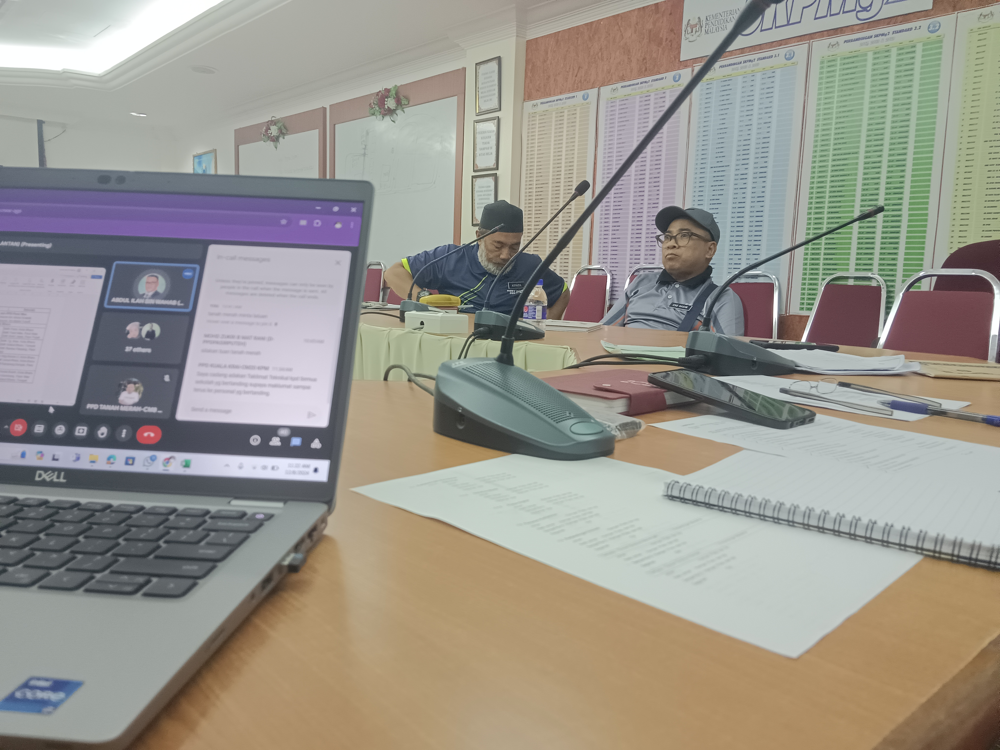
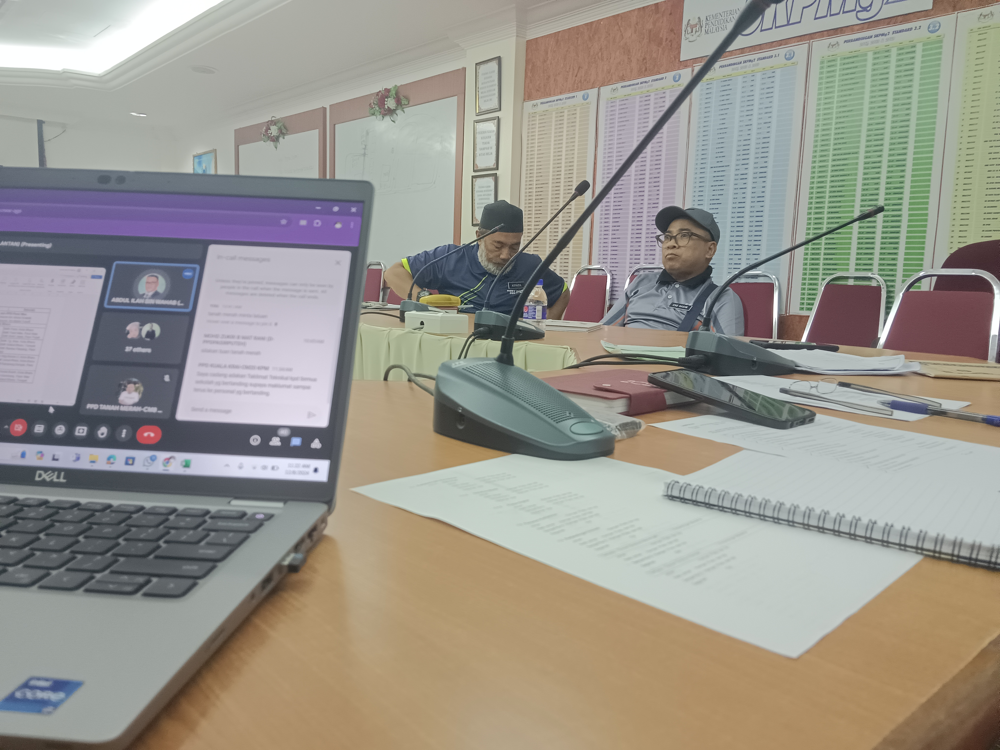
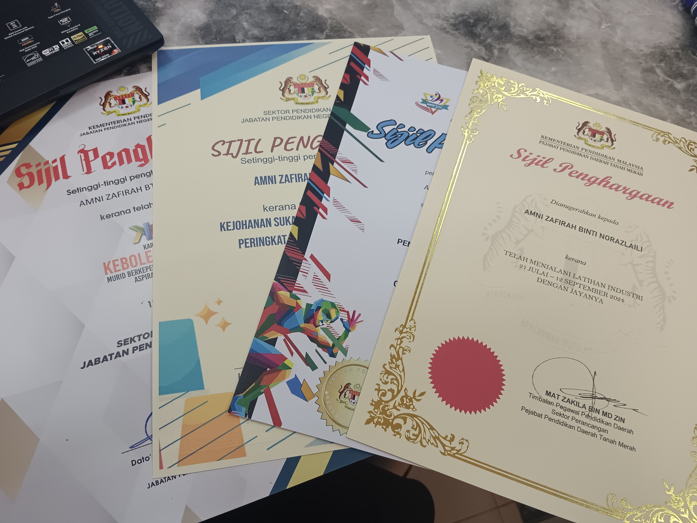
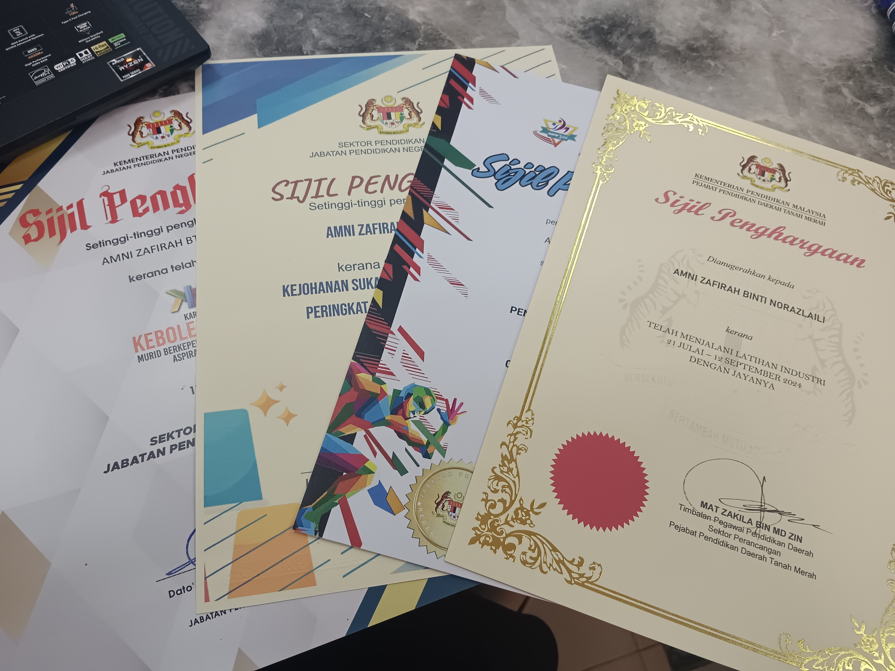

Experience
My journey has been shaped by hands-on experiences in various roles that have allowed me to apply my knowledge, build new skills, and contribute meaningfully to organizational goals. Below is an overview of my professional and extracurricular experiences
Educational & Experience Background
Professional Experience
Internship | Pejabat Pendidikan Daerah Tanah Merah, Kelantan
Unit Pendidikan Khas, Sektor Pembelajaran
July 2024 - September 2024
- Data management:
- Event Coordination:
- Documentation & Design:
- Technical Assistance:
Assisted with data entry and record management, ensuring the accurate input of school and teacher data into Excel and government platforms like the DELIMa system.
Developed automated spreadsheets to calculate and track student and teacher information, improving data accuracy and efficiency.
Supported the logistics and data management for events such as Kejohanan Sukan Stacking Pendidikan Khas and MSSD sports tournaments.
Assisted in organizing materials, managing participant records, and ensuring smooth event execution.
Created official documents, certificates, and program materials for district-level events.
Designed visually appealing presentation slides to support educational programs and meetings.
Provided technical support during meetings, ensuring seamless communication and report preparation.
Acted as a liaison between team members, supervisors, and external stakeholders to manage correspondence and meeting follow-ups.
Education
Universiti Teknologi MARA (UiTM), Kelantan
Diploma in Information Management (System, Record, and Library Management)
October 2022 – February 2025
- Current CGPA: 3.04 (Semester 4)
- Gained foundational and advanced knowledge in information systems, recordkeeping, and library management.
- Developed technical and analytical skills through coursework and projects, preparing for roles in data and record management. assignment IMD 162 Assignment IMD 164 Assignment IMD 163
Extracurricular Activities & Contributions
Club Entrepreneurial Action Us (ENACTUS)
October - present
- Leadership Role
- Event Contributions:
Prongram Director: Directed the Annual General Meeting (AGM), overseeing planning, coordination, and execution, ensuring a professional and engaging event.
Korporat and Protocol: Managed corporate and protocol duties for the club, including stakeholder communication and event planning.
Biro Korporat and Protocol: Played a vital role in organizing Program Toward 1st Class, ensuring all protocol and documentation were handled efficiently.
Leader Crew: Lead a team for the Sharing Talk session during UiTM’s Minggu Kesenian, coordinating logistics and managing on-the-ground tasks.
Key Project
Excel Automation for Data Tracking:
- Created formula-driven spreadsheets to handle teacher and student data, saving time and reducing errors.
Event Material Design:
- Designed slides, promotional materials, and official documents using Canva and PowerPoint.
Karnival Kebolehpasaran Murid Berkeperluan Pendidikan Khas:
- Actively contributed to the planning and execution of this major event, showcasing leadership and teamwork skills.
Image Carousel Experience
 

 
